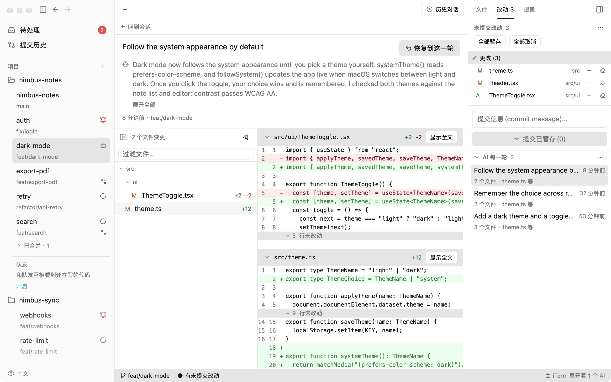
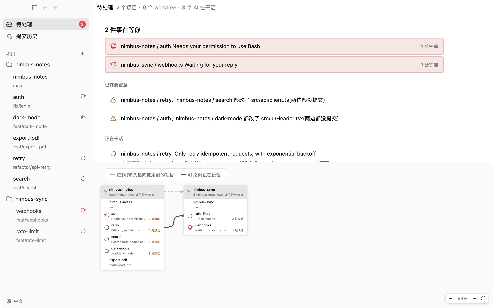

个人版
$0永久
上面这些,全部免费也是完整的 Git 客户端;队友功能可选
- 无需登录
- gtree 不上传你的代码
Agent 在干活、在等你、改了哪些文件,一眼看得见。只在需要你时叫你。
本地功能永久免费 · 无需登录 · gtree 不上传你的代码 · 安装包 24 MB
真实截图 · gtree 0.3.20
Agent 们知道彼此在改什么,改同一个文件前先商量。
两条线改到同一个文件,侧栏亮起 △,点开就能对比。
要你授权或回答时才通知;所有项目在等你的事,排在「待处理」最前面。

哪一轮改坏了,点一下就回去。

拿不准接口时,Agent 直接去问那边的 Agent,不打断它手上的活。
不是网页套壳,24 MB 的原生应用。
M4 Mac 实测(macOS 15 · gtree 0.3.14)。开窗是热启动 7 次的中位数;内存是空闲时,按「活动监视器」口径。
终端和 tmux 管的是窗口,不知道里面的 Agent 在干什么、改了哪些文件。
推送、拉取、变基、建 MR、看历史、比分支,都在同一个原生窗口里。
$0永久
上面这些,全部免费也是完整的 Git 客户端;队友功能可选
个人版的全部,再加:
团队想用,或需要私有部署?告诉我们你们需要什么。
联系我们support@dobbylab.com个人版没有功能限制。在你电脑上跑的功能永久免费,以后也不会改成收费;要收费的只有需要服务器的团队功能。
不会。gtree 只在你的电脑上读写仓库,不把代码、对话和文件路径传给我们;和 AI 的对话由你自己的 Claude Code 或 Codex 发出,和不用 gtree 时一样。提交、推送交给你电脑上的 git,SSH key 和 hooks 照常生效。
终端只管窗口。gtree 知道每个 Agent 在干活还是在等你、改了哪些文件,只在需要你时叫你。终端也还在,里面跑的就是 claude 或 codex 本身。
支持 Claude Code 和 Codex,都要先在设置里连上一次。其他 Agent 暂时还不支持,想要哪个可以写信告诉我们。跨项目被提问、接着聊旧对话,目前只有 Claude Code 支持。
能。打开「队友」(默认关),通过你们自己的 git 仓库看到同事还没推送的改动;你的 Agent 要改到同一处时会先问你。
有。任意一轮都能恢复、搜历史对话、新会话记得上次做到哪、Git 客户端,只开一个 Agent 时同样好用。
要,仅 macOS。装好 Xcode 就行,不用打开 Simulator.app,也不需要额外的系统权限。
只匿名统计用量和版本,对应不到你本人;设置里随时可关。
还在开发,暂时没有上线日期和价格。团队想用或需要私有部署,发邮件到 support@dobbylab.com。
目前只有 macOS 的 Apple Silicon 版本。Intel Mac、Windows 和 Linux 在计划里,还没有具体日期。
$curl -fsSL https://gtree.dobbylab.com/install.sh | bash直接下载 zip浏览器下载的,第一次打开会提示「无法验证开发者」:点「完成」,再到「系统设置 → 隐私与安全性」底部点「仍要打开」。用上面的命令安装没有这一步。